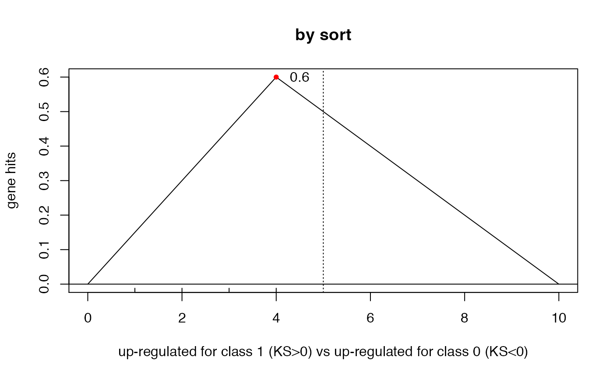
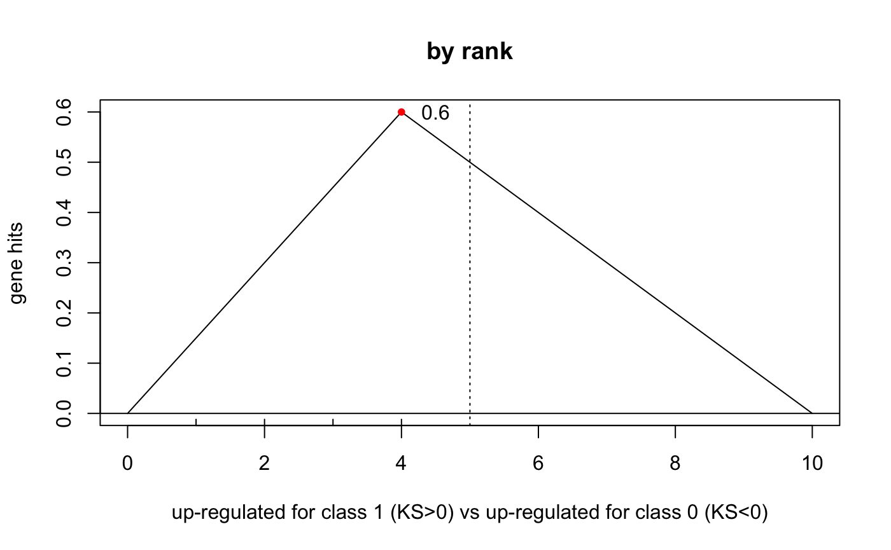

vignettes/docs/GenesetMapping4KS.Rmd
GenesetMapping4KS.RmdLet us generate a toy set of 10 genes with random tScores, which we will use to establish a gene ranking and based on which we will perform the KS enrichment.
set.seed(123)
tScores <- round(rnorm(ngenes,0,1),4)
names(tScores) <- sprintf("gene%02d",1:ngenes)
print(tScores)## gene01 gene02 gene03 gene04 gene05 gene06 gene07 gene08 gene09 gene10
## -0.5605 -0.2302 1.5587 0.0705 0.1293 1.7151 0.4609 -1.2651 -0.6869 -0.4457Notice that the t.score vector is named (i.e., each score is labeled by the corresponding gene).
Let’s assume the geneset we want to test is the following:
gset <- c("gene03","gene05","gene06","gene07")To establish the geneset members’ ranking, and to properly perform the KS test, we can proceed in one of two ways.
## sorting the negative of the scores yields decreasing order sort
## alternatively: sortT <- tScores[order(tScores,decreasing=TRUE)]
sortT <- sort(-tScores)
## find the geneset members' positions
idx1 <- match(gset,names(sortT))
print(idx1) # show those positions (toward the end of the ranking)## [1] 2 4 1 3
## perform ks test
ksGenescore(ngenes,idx1,do.plot=TRUE,main="by sort")
##
## Two-sample Kolmogorov-Smirnov test
##
## data: 1:n.x and y
## D = 0.6, p-value = 0.2551
## alternative hypothesis: two-sided
## computing ranks of minus the scores (to use decreasing order)
rankT <- rank(-tScores,ties.method="first")
## find the positions of geneset members in the rank list
idx2 <- match(gset,names(rankT))
print(rankT[idx2]) # show those ranks## gene03 gene05 gene06 gene07
## 2 4 1 3
## perform ks test on the ranks
ksGenescore(ngenes,rankT[idx2],do.plot=TRUE,main="by rank")
##
## Two-sample Kolmogorov-Smirnov test
##
## data: 1:n.x and y
## D = 0.6, p-value = 0.2551
## alternative hypothesis: two-sided